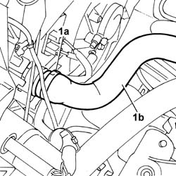
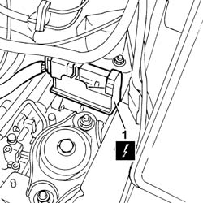
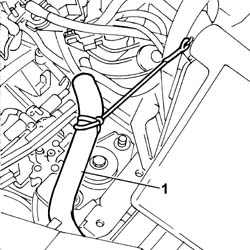
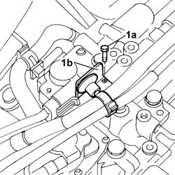
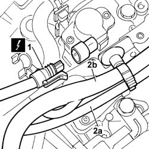
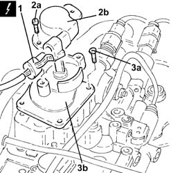
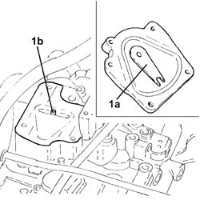

2127E44 hydraulic selection gearbox clutch position sensor - r r
- Path
- Procedures > 21 GEARBOX UNIT > 2127 ELECTRO-HYDRAULIC SELECTION. GEARBOX EXTERNAL. CONTROLS > 2127E electric speed selection system > 2127E44 hydraulic selection gearbox clutch position sensor - r r
- Kind
- repair procedure (removal / refitting; the operation number is the code)
- Applies to
- engines: 1.2 8v; all production periods
- Interactive page
- https://sloeber94.github.io/elrnDB-fPnd/en/#/2752690
Applies to: engines: 1.2 8v; all production periods
 Removing
Removing
 Refitting
RefittingPlace the gear lever in neutral, N.
5530B56 BATTERY DRIP TRAY COVER - R.R.
5530B52 Battery DRIP TRAY/SUPPORT - R.R.
Position a suitable container to collect the coolant.
1. Open the retaining band (1a) and disconnect the pipe (1b), radiator side.
Move the pipe away from the work area.

Applies to: engines: 1.2 8v; all production periods
1. Disconnect the electrical connection for the braking system control unit.
 | Name | Connector |
|---|---|---|
1 | Braking system control unit | M51 |

Applies to: engines: 1.2 8v; all production periods
1. Move the front wiring section away from the work area.

Applies to: engines: 1.2 8v; all production periods
1. Undo the fixing bolt (1a) on the retaining bracket (1b).

Applies to: engines: 1.2 8v; all production periods
1. Disconnect the electrical connection of the gear engagement potentiometer.
| Name | Connector |
|---|---|---|
1 | Gear shift potentiometer | K69 |
2. Move the high-pressure supply pipe (2a) and the front wiring section (2b) away from the work area.

Applies to: engines: 1.2 8v; all production periods
1. Disconnect the electrical connection for the electro-hydraulic gear selection clutch position sensor.
| Name | Connector |
|---|---|---|
1 | Clutch position potentiometer | K95 |
2. Undo the fixing bolts (2a) and remove the clutch position sensor (2b).
3. Undo the fixing bolts (3a) and remove the clutch position signal relay (3b).

Applies to: engines: 1.2 8v; all production periods
Refitting
Removing1. Fit the clutch position signal relay making sure to match the fork (1a) with the engagement pin (1b) and secure it with its bolts.

Applies to: engines: 1.2 8v; all production periods
Fit the sensor on the clutch position signal relay making sure to charge the potentiometer.
Tighten the bolts fixing the clutch position sensor.
Connect the electrical connection for the electro-hydraulic gear selection clutch position sensor.
| Name | Connector |
|---|---|---|
- | Clutch position potentiometer | K95 |
1. Tighten the fixing bolt (1a) on the retaining bracket (1b).
Applies to: engines: 1.2 8v; all production periods
Connect the gear engagement potentiometer electrical connection.
| Name | Connector |
|---|---|---|
- | Gear shift potentiometer | K69 |
Refit the front wiring section.
Connect the electrical connection for the braking system control unit.
| Name | Connector |
|---|---|---|
- | Braking system control unit | M51 |
Connect the pipe from the radiator to the engine, radiator side, and secure it with the retaining band.
0010T21 coolant check density and top up if necessary
5530B52 Battery DRIP TRAY/SUPPORT - R.R.
5530B56 BATTERY DRIP TRAY COVER - R.R.
Remove the vehicle from the lift.
Connect the Examiner diagnostic instrument and initialise the gear engagement/selection positions, checking that the engagement travel is correct.